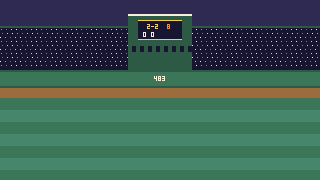

THE SAY HEY DASH
Art-direction reference sheet · Milestone 1 · DRAFT — REQUIRES CLIENT APPROVAL
Goal: "a forgotten 1990s arcade cabinet that teaches baseball history." Simple, readable, chunky pixel art; flat colour; strong contrast; expressive but minimal animation. All artwork is original — creative references are thematic only.
1. Palette — "Sunset arcade" (revised 2026-11-20)
Revised after the client's M3 feedback: a darker, more vibrant retro-arcade feel built from deep purples, sunset oranges, muted greens and touches of bright yellow. Every pixel in the game comes from this palette. The sky is drawn as flat sunset bands (purple → plum → rose → orange → yellow) with a 1 px dither between bands — no gradients.
Character colours — unchanged from M3 (the client asked for no character changes, so the outfielder keeps his approved colours exactly):
2. Pixel grid & technical rules
| Rule | Value | Why |
|---|---|---|
| Game resolution | 320 × 180 logical pixels, upscaled (Pixel Perfect Camera, Upscale RT) | Authentic chunky look; identical pixels at any iframe size |
| Pixels per unit | 16 PPU | GDD: 16×16 / 32×32 grid units |
| Character cell | 32 × 32 (figure ≈ 14 × 26 px) | Readable silhouette at 320×180 |
| Ball / shadow | 8 × 8 / 8 × 4 (shadow at 55 % opacity Midnight) | Must read clearly while small |
| Tiles / props | 16 × 16 multiples | Grid alignment |
| Filtering | Point (nearest neighbour), no mipmaps, no compression | No blur, no colour drift |
| Outlines | 1 px Midnight outline on characters and ball | Contrast on any background |
| Shading | Max 1 shade step per material; no gradients, no dithering on sprites | "Minimal textures" / flat colour |
| Source format | Aseprite (.aseprite) — imported directly by Unity's Aseprite Importer (already installed); PNG exports kept alongside | Editable source handed to client (deliverable #2) |
3. Character & object studies
Placeholder studies generated for the M1 proof of concept (Tools/ArtGen). They set scale, outline and palette — not final art (M3).
Outfielder · idle (32×32 @ 8×)

1950s flannel uniform in off-white, red socks/belt trim, cap with brim to the facing side, brown leather glove. No team logos, numbers or lettering until name/marks licensing is approved (Q1). Generic-variant ready by design.
Ball & landing shadow (@ 12×)

Ball grows slightly with height (1–2 px) — the shadow is the landing indicator: it sits on the ground at the predicted landing point and tightens as the ball drops. A pulsing ring (non-colour cue: shape + size) marks the catch zone.
Animation budget (M3)
| Animation | Frames | FPS |
|---|---|---|
| Idle (breathing, glove tap) | 2–4 | 4 |
| Run (away from camera / sideways) | 6 | 12 |
| Over-the-shoulder catch | 6–8 | 12 |
| Spin / turn | 4 | 12 |
| Throw | 5–6 | 12 |
| Lead runner (generic, tiny) | 4 | 10 |
Reduced-motion mode: the catch sequence cuts to its key pose (shortened, skippable).
4. Environment — evoking the Polo Grounds

Not a scale reconstruction (GDD), but recognisable cues: vast, deep centre field (the "483" marker), the centre-field clubhouse with scoreboard above the wall, green outfield wall, bleachers as a simple band of crowd dots, dirt warning track before the wall. Scoreboard shows the moment: tied 2–2, 8th inning, 0 outs — no team names.
Camera framing during Stage A looks out toward centre field (player runs away from the camera toward the wall), matching the iconic over-the-shoulder view. Final layout to be confirmed in M2 greybox.
5. Typography & UI
STARTSOUND: ONCREDITS
★ROOKIE ★★ALL-STAR ★★★LEGENDARY
* Name display subject to licensing approval (Q1). Preview uses a system monospace font; production will use OFL pixel fonts — Press Start 2P for titles, Pixelify Sans (or Silkscreen) for body text for readability.
| UI rule | Spec |
|---|---|
| Buttons | Hard-edged rectangles, 3 px off-white border, 4 px drop shadow, orange fill = primary action. Focus state: yellow outline (keyboard navigable). |
| Minimum text size | 8 px glyph height at 320×180 (≈ 24–32 CSS px on desktop). Body never smaller. |
| Touch targets | ≥ 48 CSS px; on-screen stick bottom-left, ACTION bottom-right, pause top-right. |
| Non-colour cues | Rank = stars + word; timing meter = notch + "PERFECT/GOOD/MISS" text; catch zone = ring shape. |
| Motion | Blinks ≤ 1 Hz (no rapid flashing). Reduced-motion disables screen shake, blink, decorative tweens. |
6. Do / Don't
DO
- Clean silhouettes readable at 1×
- Flat colour, 1 shade step
- Integer-pixel motion (no sub-pixel jitter)
- Strong contrast between player, ball and field
- Exaggerated key poses (the catch, the spin)
DON'T
- Photorealism, gradients, soft shading
- Particle storms / complex effects
- Real team logos, uniform numbers or archival imagery without approval
- Busy backgrounds behind the ball's flight path
- Art copied from existing games
Thematic references (inspiration only)
- Early-90s arcade sports cabinets
- Vintage 1950s sports-magazine covers (type, colour blocking)
- Museum exhibit placards (for the history screen)
- Side-scrolling arcade HUDs